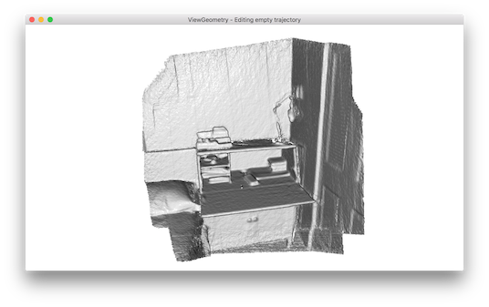
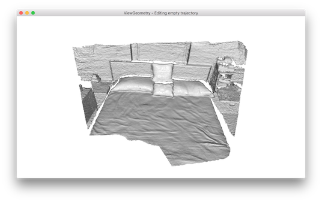
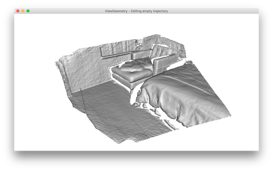
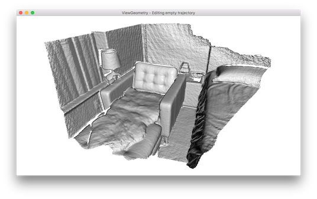

Make fragments¶
The first step of the scene reconstruction system is to create fragments from short RGBD sequences.
Input arguments¶
The script runs with python run_system.py [config] --make. In [config],
["path_dataset"] should have subfolders image and depth to store the
color images and depth images respectively. We assume the color images and the
depth images are synchronized and registered. In [config], the optional
argument ["path_intrinsic"] specifies the path to a json file that stores
the camera intrinsic matrix (See
/tutorial/pipelines/rgbd_odometry.ipynb#read-camera-intrinsic for
details). If it is not given, the PrimeSense factory setting is used instead.
Register RGBD image pairs¶
33 34 35 36 37 38 39 40 41 42 43 44 45 46 47 48 49 50 51 52 53 54 55 56 57 58 59 | # examples/python/reconstruction_system/make_fragments.py
def register_one_rgbd_pair(s, t, color_files, depth_files, intrinsic,
with_opencv, config):
source_rgbd_image = read_rgbd_image(color_files[s], depth_files[s], True,
config)
target_rgbd_image = read_rgbd_image(color_files[t], depth_files[t], True,
config)
option = o3d.pipelines.odometry.OdometryOption()
option.max_depth_diff = config["max_depth_diff"]
if abs(s - t) != 1:
if with_opencv:
success_5pt, odo_init = pose_estimation(source_rgbd_image,
target_rgbd_image,
intrinsic, False)
if success_5pt:
[success, trans, info
] = o3d.pipelines.odometry.compute_rgbd_odometry(
source_rgbd_image, target_rgbd_image, intrinsic, odo_init,
o3d.pipelines.odometry.RGBDOdometryJacobianFromHybridTerm(),
option)
return [success, trans, info]
return [False, np.identity(4), np.identity(6)]
else:
odo_init = np.identity(4)
[success, trans, info] = o3d.pipelines.odometry.compute_rgbd_odometry(
source_rgbd_image, target_rgbd_image, intrinsic, odo_init,
|
The function reads a pair of RGBD images and registers the source_rgbd_image
to the target_rgbd_image. The Open3D function compute_rgbd_odometry is
called to align the RGBD images. For adjacent RGBD images, an identity matrix is
used as the initialization. For non-adjacent RGBD images, wide baseline matching
is used as the initialization. In particular, the function pose_estimation
computes OpenCV ORB feature to match sparse features over wide baseline images,
then performs 5-point RANSAC to estimate a rough alignment, which is used as
the initialization of compute_rgbd_odometry.
Multiway registration¶
61 62 63 64 65 66 67 68 69 70 71 72 73 74 75 76 77 78 79 80 81 82 83 84 85 86 87 88 89 90 91 92 93 94 95 96 97 98 99 100 101 102 103 104 105 106 107 108 | # examples/python/reconstruction_system/make_fragments.py
def make_posegraph_for_fragment(path_dataset, sid, eid, color_files,
depth_files, fragment_id, n_fragments,
intrinsic, with_opencv, config):
o3d.utility.set_verbosity_level(o3d.utility.VerbosityLevel.Error)
pose_graph = o3d.pipelines.registration.PoseGraph()
trans_odometry = np.identity(4)
pose_graph.nodes.append(
o3d.pipelines.registration.PoseGraphNode(trans_odometry))
for s in range(sid, eid):
for t in range(s + 1, eid):
# odometry
if t == s + 1:
print(
"Fragment %03d / %03d :: RGBD matching between frame : %d and %d"
% (fragment_id, n_fragments - 1, s, t))
[success, trans,
info] = register_one_rgbd_pair(s, t, color_files, depth_files,
intrinsic, with_opencv, config)
trans_odometry = np.dot(trans, trans_odometry)
trans_odometry_inv = np.linalg.inv(trans_odometry)
pose_graph.nodes.append(
o3d.pipelines.registration.PoseGraphNode(
trans_odometry_inv))
pose_graph.edges.append(
o3d.pipelines.registration.PoseGraphEdge(s - sid,
t - sid,
trans,
info,
uncertain=False))
# keyframe loop closure
if s % config['n_keyframes_per_n_frame'] == 0 \
and t % config['n_keyframes_per_n_frame'] == 0:
print(
"Fragment %03d / %03d :: RGBD matching between frame : %d and %d"
% (fragment_id, n_fragments - 1, s, t))
[success, trans,
info] = register_one_rgbd_pair(s, t, color_files, depth_files,
intrinsic, with_opencv, config)
if success:
pose_graph.edges.append(
o3d.pipelines.registration.PoseGraphEdge(
s - sid, t - sid, trans, info, uncertain=True))
o3d.io.write_pose_graph(
join(path_dataset, config["template_fragment_posegraph"] % fragment_id),
|
This script uses the technique demonstrated in
/tutorial/pipelines/multiway_registration.ipynb. The function
make_posegraph_for_fragment builds a pose graph for multiway registration of
all RGBD images in this sequence. Each graph node represents an RGBD image and
its pose which transforms the geometry to the global fragment space.
For efficiency, only key frames are used.
Once a pose graph is created, multiway registration is performed by calling the
function optimize_posegraph_for_fragment.
12 13 14 15 16 17 18 19 20 21 22 23 24 25 26 27 28 29 30 31 32 33 34 35 36 37 38 39 40 | # examples/python/reconstruction_system/optimize_posegraph.py
def run_posegraph_optimization(pose_graph_name, pose_graph_optimized_name,
max_correspondence_distance,
preference_loop_closure):
# to display messages from o3d.pipelines.registration.global_optimization
o3d.utility.set_verbosity_level(o3d.utility.VerbosityLevel.Debug)
method = o3d.pipelines.registration.GlobalOptimizationLevenbergMarquardt()
criteria = o3d.pipelines.registration.GlobalOptimizationConvergenceCriteria(
)
option = o3d.pipelines.registration.GlobalOptimizationOption(
max_correspondence_distance=max_correspondence_distance,
edge_prune_threshold=0.25,
preference_loop_closure=preference_loop_closure,
reference_node=0)
pose_graph = o3d.io.read_pose_graph(pose_graph_name)
o3d.pipelines.registration.global_optimization(pose_graph, method, criteria,
option)
o3d.io.write_pose_graph(pose_graph_optimized_name, pose_graph)
o3d.utility.set_verbosity_level(o3d.utility.VerbosityLevel.Error)
def optimize_posegraph_for_fragment(path_dataset, fragment_id, config):
pose_graph_name = join(path_dataset,
config["template_fragment_posegraph"] % fragment_id)
pose_graph_optimized_name = join(
path_dataset,
config["template_fragment_posegraph_optimized"] % fragment_id)
run_posegraph_optimization(pose_graph_name, pose_graph_optimized_name,
max_correspondence_distance = config["max_depth_diff"],
|
This function calls global_optimization to estimate poses of the RGBD images.
Make a fragment¶
110 111 112 113 114 115 116 117 118 119 120 121 122 123 124 125 126 127 128 129 130 131 132 133 134 135 136 137 138 139 140 141 142 143 144 145 | # examples/python/reconstruction_system/make_fragments.py
def integrate_rgb_frames_for_fragment(color_files, depth_files, fragment_id,
n_fragments, pose_graph_name, intrinsic,
config):
pose_graph = o3d.io.read_pose_graph(pose_graph_name)
volume = o3d.pipelines.integration.ScalableTSDFVolume(
voxel_length=config["tsdf_cubic_size"] / 512.0,
sdf_trunc=0.04,
color_type=o3d.pipelines.integration.TSDFVolumeColorType.RGB8)
for i in range(len(pose_graph.nodes)):
i_abs = fragment_id * config['n_frames_per_fragment'] + i
print(
"Fragment %03d / %03d :: integrate rgbd frame %d (%d of %d)." %
(fragment_id, n_fragments - 1, i_abs, i + 1, len(pose_graph.nodes)))
rgbd = read_rgbd_image(color_files[i_abs], depth_files[i_abs], False,
config)
pose = pose_graph.nodes[i].pose
volume.integrate(rgbd, intrinsic, np.linalg.inv(pose))
mesh = volume.extract_triangle_mesh()
mesh.compute_vertex_normals()
return mesh
def make_pointcloud_for_fragment(path_dataset, color_files, depth_files,
fragment_id, n_fragments, intrinsic, config):
mesh = integrate_rgb_frames_for_fragment(
color_files, depth_files, fragment_id, n_fragments,
join(path_dataset,
config["template_fragment_posegraph_optimized"] % fragment_id),
intrinsic, config)
pcd = o3d.geometry.PointCloud()
pcd.points = mesh.vertices
pcd.colors = mesh.vertex_colors
pcd_name = join(path_dataset,
config["template_fragment_pointcloud"] % fragment_id)
|
Once the poses are estimates, /tutorial/pipelines/rgbd_integration.ipynb is used to reconstruct a colored fragment from each RGBD sequence.
Batch processing¶
167 168 169 170 171 172 173 174 175 176 177 178 179 180 181 182 183 184 185 186 187 | # examples/python/reconstruction_system/make_fragments.py
def run(config):
print("making fragments from RGBD sequence.")
make_clean_folder(join(config["path_dataset"], config["folder_fragment"]))
[color_files, depth_files] = get_rgbd_file_lists(config["path_dataset"])
n_files = len(color_files)
n_fragments = int(math.ceil(float(n_files) / \
config['n_frames_per_fragment']))
if config["python_multi_threading"] == True:
from joblib import Parallel, delayed
import multiprocessing
import subprocess
MAX_THREAD = min(multiprocessing.cpu_count(), n_fragments)
Parallel(n_jobs=MAX_THREAD)(delayed(process_single_fragment)(
fragment_id, color_files, depth_files, n_files, n_fragments, config)
for fragment_id in range(n_fragments))
else:
for fragment_id in range(n_fragments):
process_single_fragment(fragment_id, color_files, depth_files,
|
The main function calls each individual function explained above.
Results¶
Fragment 000 / 013 :: RGBD matching between frame : 0 and 1
Fragment 000 / 013 :: RGBD matching between frame : 0 and 5
Fragment 000 / 013 :: RGBD matching between frame : 0 and 10
Fragment 000 / 013 :: RGBD matching between frame : 0 and 15
Fragment 000 / 013 :: RGBD matching between frame : 0 and 20
:
Fragment 000 / 013 :: RGBD matching between frame : 95 and 96
Fragment 000 / 013 :: RGBD matching between frame : 96 and 97
Fragment 000 / 013 :: RGBD matching between frame : 97 and 98
Fragment 000 / 013 :: RGBD matching between frame : 98 and 99
The following is a log from optimize_posegraph_for_fragment.
[GlobalOptimizationLM] Optimizing PoseGraph having 100 nodes and 195 edges.
Line process weight : 389.309502
[Initial ] residual : 3.223357e+05, lambda : 1.771814e+02
[Iteration 00] residual : 1.721845e+04, valid edges : 157, time : 0.022 sec.
[Iteration 01] residual : 1.350251e+04, valid edges : 168, time : 0.017 sec.
:
[Iteration 32] residual : 9.779118e+03, valid edges : 179, time : 0.013 sec.
Current_residual - new_residual < 1.000000e-06 * current_residual
[GlobalOptimizationLM] total time : 0.519 sec.
[GlobalOptimizationLM] Optimizing PoseGraph having 100 nodes and 179 edges.
Line process weight : 398.292104
[Initial ] residual : 5.120047e+03, lambda : 2.565362e+02
[Iteration 00] residual : 5.064539e+03, valid edges : 179, time : 0.014 sec.
[Iteration 01] residual : 5.037665e+03, valid edges : 178, time : 0.015 sec.
:
[Iteration 11] residual : 5.017307e+03, valid edges : 177, time : 0.013 sec.
Current_residual - new_residual < 1.000000e-06 * current_residual
[GlobalOptimizationLM] total time : 0.197 sec.
CompensateReferencePoseGraphNode : reference : 0
The following is a log from integrate_rgb_frames_for_fragment.
Fragment 000 / 013 :: integrate rgbd frame 0 (1 of 100).
Fragment 000 / 013 :: integrate rgbd frame 1 (2 of 100).
Fragment 000 / 013 :: integrate rgbd frame 2 (3 of 100).
:
Fragment 000 / 013 :: integrate rgbd frame 97 (98 of 100).
Fragment 000 / 013 :: integrate rgbd frame 98 (99 of 100).
Fragment 000 / 013 :: integrate rgbd frame 99 (100 of 100).
The following images show some of the fragments made by this script.
   {kind=link}
{kind=link}
{kind=link}
{kind=link}